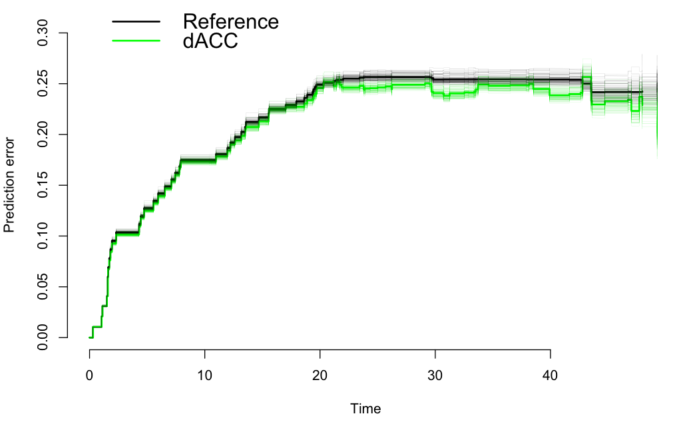

This was originally posted on Blogger here.
A paper recently published in PNAS by Aharoni et al. entitled “Neuroprediction of future arrest” has claimed to demonstrate that future criminal acts can be predicted using fMRI data. In the study, the group performed fMRI on 96 individuals who had previously been incarcerated, using a go/no-go task. They then followed up the individuals (up to four years after release) and recorded whether they had been rearrested. A survival model was used to model the likelihood of being re-arrested, which showed that activation in the dorsal anterior cingulate cortex (dACC) during the go/no-go task was associated with rearrest, such that individuals with higher levels of dACC activity during the task were less likely to be rearrested. This fits with the idea that the dACC is involved in cognitive control, and that cognitive control is important for controlling impulses that might land one back in jail. For example, using a median split of dACC activity, they found that the upper half had a rearrest rate of 46% while the lower half had a rearrest rate of 60%. Survival models also showed that dACC was the only variable amongst a number tested that had a significant relation to rearrest.
This is a very impressive study, made even more so by the fact that the authors released the data for the tested variables (in spreadsheet form) with the paper. However, there is one critical shortcoming to the analyses reported in the paper, which is that they do not examine out-of-sample predictive accuracy. As I have pointed out recently, statistical relationships within a sample generally provide an overly optimistic estimate of the ability to generalize to new samples. In order to be able to claim that one can “predict” in a real-world sense, one has to validate the predictive accuracy of the technique on out-of-sample data.
With the help of Jeanette Mumford (my local statistical guru), I took the data from the Aharoni paper and examined the ability to predict rearrest on out-of-sample data using crossvalidation; the code and data for this analysis are available at https://github.com/poldrack/criminalprediction. The proper way to model the data is using a survival model that can deal with censored observations (since subjects differed in how long they were followed). We did this in R using the Cox regression model from the R rms library. We replicated the reported finding of a significant effect of dACC activation on rearrest in the Cox model, with parameter estimates matching those reported in the paper, suggesting to me that we had correctly replicated their analysis.
We examined predictive accuracy using the pec library for R, which generates out-of-sample prediction error curves for survival models. We used 10-fold crossvalidation to estimate the prediction error, and ran this 100 times to assess the variability of the prediction error estimates. The figure below shows the prediction error as a function of time for the reference model (which simply estimates a single survival curve for the whole group) in black, and the model including dACC activation as a predictor in green; the thick lines represent the mean prediction error across the 100 crossvalidation runs, and the light lines represent the curve for each individual run.

This analysis shows that there is a slight benefit to out-of-sample prediction of future rearrest using dACC activation, particularly in the period from 20 to 48 months after release. However, this added prediction ability is exceedingly small; if we take the integrated Brier score across the period of 0-48 months, which is a metric for assessment of probabilistic predictions (taking the value of 0 for perfect predictions and 1 for completely inaccurate predictions), we see that the score for the reference model is 0.214 and the score for the model with dACC as a predictor is 0.207. We found slightly improved prediction (integrated Brier score of 0.203) if we also added Age alongside dACC as a predictor.
The take-away message from this analysis is that fMRI can indeed provide information relevant to whether an individual will be rearrested for a crime. However, this added predictability is exceedingly small, and we don’t know whether there are other (unmeasured) demographic or behavioral measures that might provide similar predictive power. In addition, these analyses highlight the importance of using out-of-sample prediction analyses whenever one makes a claim about the predictive ability of neuroimaging data for any outcome. We are currently preparing a manuscript that will address the issue of “neuroprediction” in greater detail.
4 comments captured from the original post
Anonymous · 2013-04-18
Ross · 2013-05-10
Russ Poldrack · 2016-08-13
hcp4715 · 2016-08-13